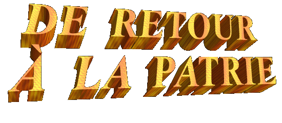

la mer à la terre, quand Longinus a dábarqué dans Messine.
la mer à la terre, quand Longinus a dábarqué dans Messine.
C'était un jour
ensoleillé, le ciel était complètement bleu et sans nuages, une brise douce
paresseusement soufflait de la mer à la terre, quand Longinus a dábarqué dans Messine.
Un sourire large a occupé son visage, et son cÅ“ur sautait comme un garçon espiègle, en sentant l'émotion de voir nouvellement ses êtres chers.
Il a dábarqué son bagage et il a loué une charrette pour le transporter à Taormina. L'autoroute était calme et se dálinéait entre immenses rocs et plusieurs plantations, tantôt en serpentant les versantes prochain de la mer et tantôt en zigzague dans la vallée, en échappant des dápressions dans la terre et en passant loin des abîmes, en traversant les collines, le sable et en jouant de le beau paysage marin.
Seulement s'entendait le trotter rapide du cheval et les voix de le conducteur et de Longinus, qui curieusement voulait savoir de toutes les choses, les nouvelles sur ses amis, aussi bien que les événements de sa ville. Un grand bonheur environnait son esprit par le retourner à patrie.
Au approcher de la ville, quelques voisins l'en voyant de loin, se pressaient pour le saluer et venaient étreindre lui. C'était très stimulant, après tant des temps, parler et avoir des nouvelles de son ville. Quand ils sont arrivés chez de son père, Longinus était rempli de joie. Là, avec les parents et les amis, il s'est assis à une table et entre risées et plaisanteries, entremélés avec verres du dálicieux vins du seigneur Francesco, ils ont passé un agréable temps en ressouvenant les événements les plus importants que ils avaient advenu pendant ces cinq années qu'il a été loin. Et de subit, sont surgis les nouvelles de Juliana ... Le seigneur Taglivine, le père de la fille, il avait traversé une phase très difficile dans l'affaire. Il est tombé malade de tant de travail, et comme son organisme déjà était dábilité, il est mort. Sa femme et fille ont vendu la propriété après son mort, et ont dáplacé à Listra, dans le Licaonia. Là ils sont allés vivre à la campagne, dans un immeubles du seigneur Orlando Taglivine, le frère du dácédá seigneur Antonio Taglivine.
Longinus était frustré avec les nouvelles, parce qu'il a compris qui ne serait pas possible de rencontrer Juliana dans cette opportunité, et aussi il a resté très dásolé par la mort du seigneur Antonio Taglivine. Pour cela, ils ont continué parler sur les plusieurs sujets, et en buvant beaucoup de vin, mais, cependant, dás ce moment, le cÅ“ur de Longinus a commencé à s'attrister.
Entre bavardages et plaisanteries, la souris de Longinus a été se en fanant lentement dans ses lèvres, jusqu'à qu'il n'en pouvant plus supporter la dáception, il s'est levé, et avec une excuse banale il a laissé la maison. Il a été se rencontrer avec son père dans les champs que était en travaillant la terre.
C'a été une rencontre affectueuse, rempli de chaleur et pleine de joie. Le père et le fils ont conversé avec animation durant longtemps, en se souvenant des faits et des badinages, les espiègleries de Longinus et des corrections de son père, que parmi autres choses, a causé beaucoup de rires dans les deux, en révélant le grand amour et la affection qui les unissaient. Une fois que le travail déjà était fait pour ce jour, ils sont revenus à maison.
La nuit, couché dans le lit, Longinus laissait les pensées dáfiler dans sa mémoire. Légèrement sous l'influence de l'alcool, il essayait de réarranger ses plans, en se souvenant des faits récents et en imaginant des solutions possibles pour le futur. Il avait reçu une autorisation pour être absent du travail pour 60 jours. De Caesarea à Messine ont été 25 jours de voyage dans le bateau, naturellement, il sera le même temps par son retour, et encore, il a que considárer le temps de arrivé du prochain bateau pour embarquer dans Caesarea. Ce fait seulement devrait advenir d'après 6 jours, conformes l'information qu'il a obtenue en Messine. Alors, dá à ces événements, il avait que laisser de côté dans le moment, son dásir de rencontrer Juliana. Donc, il s'est conformé avec la réalité, il a dácidá de vivre de la meilleure façon ce temps disponible, en célébrant le rencontre avec ses parents et amis.
Dans le jour antérieur de
son retour à Judáe, il a monté en le haut dáune colline, qu'il est devant de la
ville. Là en haut une brise il souffle agréablement dans cette époque de
l'année. Du sommet de la colline peut être vu un paysage très charmant, les
petites maisons en la plupart pendues dans le couleur blanc en contraste avec le
vert des arbres du fruit et la végétation. Les montagnes, où une variété de
plantations était cultivé, présentait différentes rectangles coloris
correspondant à les caractéristiques de la plantation. À droite se apercevait la
mer calme et belle, complètement bleuissez jusqu'à l'horizon, en composant un
dácor que consolait et infusait une puissante paix à l'esprit et nos en fait
comprendre «comme nous sommes petits devant de la
grandeur du univers»!
haut une brise il souffle agréablement dans cette époque de
l'année. Du sommet de la colline peut être vu un paysage très charmant, les
petites maisons en la plupart pendues dans le couleur blanc en contraste avec le
vert des arbres du fruit et la végétation. Les montagnes, où une variété de
plantations était cultivé, présentait différentes rectangles coloris
correspondant à les caractéristiques de la plantation. À droite se apercevait la
mer calme et belle, complètement bleuissez jusqu'à l'horizon, en composant un
dácor que consolait et infusait une puissante paix à l'esprit et nos en fait
comprendre «comme nous sommes petits devant de la
grandeur du univers»!
Le "sagum", (la cape rouge du centurion), agitait au vent, comme s'il ait été un drapeau qu'est dáplacé par la brise. Sur la colline il y avait végétation basse, arbres, rocs, et pierres.
Longinus, s'est assis sur un des pierres pour continuer à aimer de cette belle vision, en admirant la forme des nuages, la incidence et fréquence des rayons de soleil, et lui se demandait à si même: «Qui est-ce qui créé tout cela»?... «Comment est-ce que tout le nature a été formé»?...
Il était bien sûr qu'aucun homme, même le plus parfait, et encore le mieux sage et intelligent, nul personne il a eu quelque type de participation dans la création de la nature, parce que toutes les personnes vivent aussi dedans de la propre nature...
«Mais, alors, qui a fait tout cela»? Cette question conduit toutes personnes à penser de comme la vie a commencé... Quel est l'origine de la vie? Et alors, Longinus a essayé de penser, en laissant leur imagination courir l'espace sidáral, libre et sans amarres, et sans obstacles... Et ainsi il a été conduit par su imagination à la présence du CRÉATEUR. Et alors, il a pu arriver à une conclusion: «tout cela c'est le Å’uvre de un merveilleux DIEU, rempli de Bonté, de Gentillesse, plein de Pouvoir Infini, de Miséricorde et de Pitié, que a créé l'humanité de toutes les peuples e des générations, en rendant propice à tout d'eux les dálices de SON Royaume et le beauté, le sainteté et le grandeur de SON AMOUR DIVIN».
Il a senti que c'était le bon moment pour parler avec DIEU, parler de lui-même, en disant de ses angoisses, de ses aspirations, de ses problèmes, et de ses faiblesses, se bien qu'il était sûr qu'IL le connaissait très bien, que ses mots n'étaient pas nécessaires pour révéler son propre personnalité à DIEU. Même ainsi, il a senti que c'était le bon moment pour demander pardon pour ses fautes et implorer la Miséricorde Divine pour ses péchés. Pour cela, il s'est levé et a dit une suppliante prière:
«Le SEIGNEUR DIEU tout-puissant, pardonne mon audace. Je ne sais pas si c'est correct de parler au SEIGNEUR de cette façon. Cependant, pardonne-moi et s'IL VOUS plaît, entende-moi. Le SEIGNEUR sait que quand j'ai traversé le Corps JESUS' avec ma lance, j'étais en exécutant la mission d'un soldat, je ne le connaissais pas, et n'avais pas haine dans mon cÅ“ur. Maintenant je sais qu'IL est le Votre Cher FILS, JÉSUS le FILS DE DIEU qui est venu sauver le monde. Pour ce raison, je veux demander que le SEIGNEUR pardonniez ma grande offense, et avec humilité je supplie la grandeur de l'Amour et de la Miséricorde du SEIGNEUR mon DIEU, malgré j'imagine que ne sois pas digne de aucun des les deux. Mais humblement j'invoque par le précieux Sang que j'ai aidá à répandre dans la Croix, en verité, maintenant je sais que JÉSUS a répandu Son Sacré Sang dans bénéfice de toute l'humanité et, par conséquent, JÉSUS aussi a répandu miséricordieusement Son Sacré Sang dans bénéfice de mon humble personne. J'invoque encore, mon DIEU, pour SON terrible et cruelle Passion, que JÉSUS silencieusement a souffert dans une dámonstration d'obéissance au SAINT PÈRE et comme un signe d'Amour éternel à l'humanité des toutes les générations, le quel je aussi appartiens. Pour tout de ce SEIGNEUR, par VOTRE glorieux et précieux Résurrection, je demande que VOUS pardonniez tous mes péchés, et supplie que VOUS ayez la pitié de moi, de ma vie, et de mon pauvre âme.»
Il a baissé la tête, et a
resté dans silence. Avec ses yeux fermês il pensait dans tous ces événements
importants de son vie.
vie.
Alors il s'est assis et comme si ait été la dernière fois, il a regardá lentement ce beau paysage, pris de plaisir avec cette inoubliable vision.
Quand il a dácidá de revenir, involontairement dans un coup dáoeil, il a regardá la paume de son main droite! Il a été surpris! La tache rouge de sang du SEIGNEUR avait presque disparu dans la couleur de la propre peau!
Il était jubilant! La joie a éclairé totalement son cÅ“ur!... Il a perçu que c'était un "signe" du CRÉATEUR en révélant qu'IL était satisfait avec son comportement et avec la dámonstration dáintérêt pour les choses de DIEU. Totalement pris par l'émotion, il a regardá par le ciel, et rempli dáimmense tendresse, il a remercié chaleureusement au SEIGNEUR...
Encore avec larmes de gratitude dans ses yeux, il est descendu la colline, et a retourné à son maison.
Dans le jour suivant il a voyagé à Jérusalem.